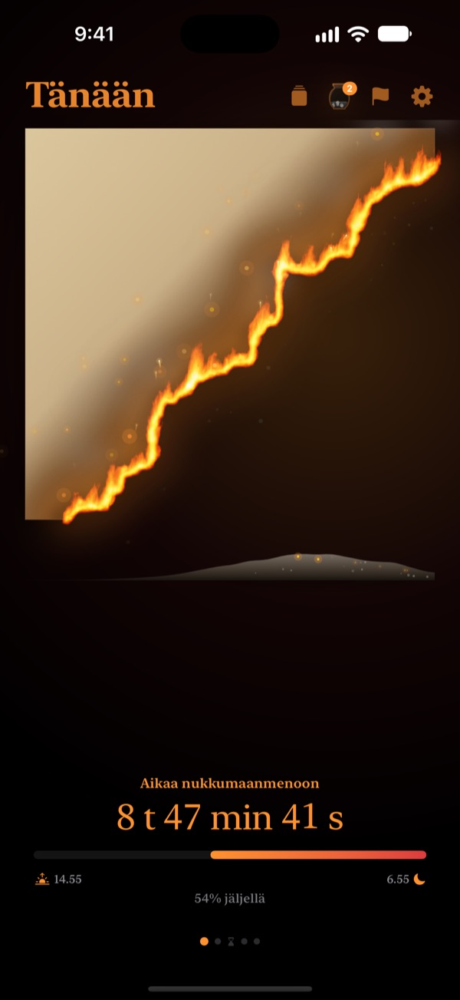
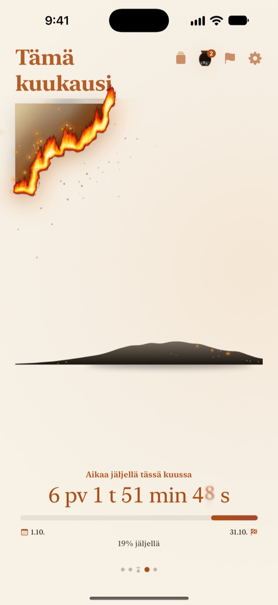
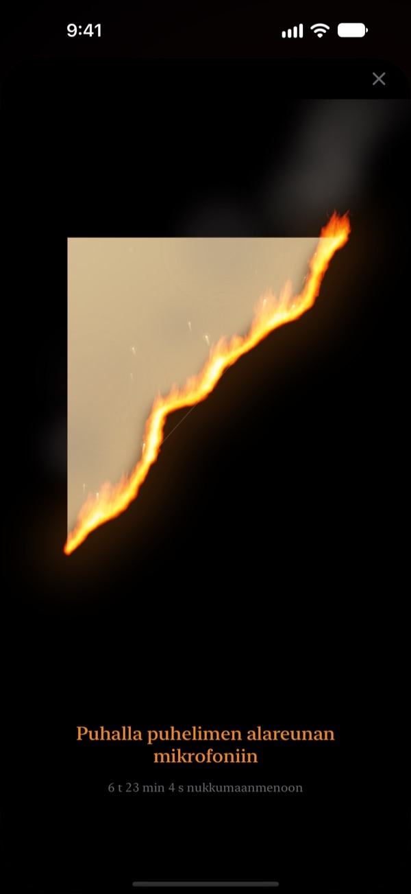
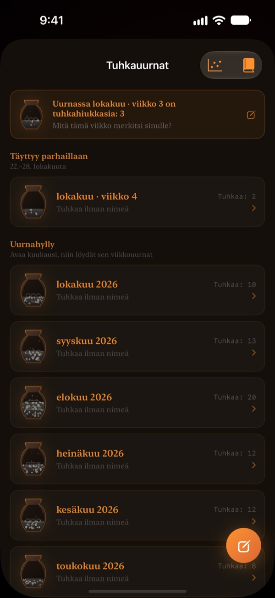

Päivän loppu
palaa silmiesi edessä
Ilta, joka numeroina näyttää harmittomalta, tuntuu erilaiselta palavana pergamenttina. Puoli tuntia ennen nukkumaanmenoa puhallat näyttöön, sammutat tulen ja päätät päivän.
Palava pergamentti, sammuttaminen puhaltamalla ja pohdinnat ovat ilmaisia.

Kokeile puhaltaa se sammuksiin
Siirrä kello juuri ennen nukkumaanmenoa, ja pidä sitten painiketta pohjassa tai puhalla mikrofoniin.
Onko kello yhtäkkiä keskiyö?
Syöt illallisen, istahdat hetkeksi, ja päivä on mennyt. Kellon numerot näyttävät joka ilta samoilta, joten aika ei tunnu hupenevan. Palava Pergamentti näyttää jäljellä olevan ajan palavana pergamenttina, jotta huomaat sen ennen kuin ilta katoaa.
Päivä, viikko ja vuosi palavat
Heräämisestä nukkumaanmenoon pergamentti palaa hitaasti. Samalla tavalla näet, mitä tästä viikosta, kuukaudesta ja vuodesta on jäljellä.
Lisää tavoite, jolla on päivämäärä, määräajaksi, niin sen lähtölaskenta kulkee rinnalla.

Puhalla päivä sammuksiin
30 minuuttia ennen nukkumaanmenoa voit puhaltaa palavaan pergamenttiin ja sammuttaa tulen. Vain puhalluksen voimaa käytetään, eikä mitään nauhoiteta.
Jäljelle jäävä sirpale säästetään. Käännä se ja kirjoita taakse rivi päivästäsi.

Kulunut aika jää tuhkaksi
Katso päivää taaksepäin yhdellä rivillä ja aseta se pisteeksi kaksiakseliseen kaavioon sen mukaan, mihin aika kului. Pohdinnat kertyvät viikon ja kuukauden tuhkauurniin, ja voit lukea ne uudelleen Pohdintakirjasta.
Tuhkan virta näyttää jakaumakaaviolla ja hiilikalenterilla, mihin aikasi meni.

Alkuun kolmella askeleella
- 1
Aseta herätys ja nukkumaanmeno
Napauta oikean yläkulman ratasta. Pergamentti syttyy ja sammuu sen mukaan.
- 2
Valitse ajanjakso
Pyyhkäise päivän, viikon, kuukauden ja vuoden välillä tai piilota tarpeettomat sivut asetuksista.
- 3
Lisää widget
Koti- tai lukitusnäytöllä näet jäljellä olevan ajan avaamatta sovellusta.
Missä näet jäljellä olevan ajan
- Päivä
- Heräämisestä nukkumaanmenoon
- Viikko · Kuukausi · Vuosi
- Mitä tästä viikosta, kuukaudesta ja vuodesta on jäljellä
- Vapaa-aika
- Viikon pergamentti palaa vain tunteina, jotka varaat itsellesi (Pro)
- Määräajat
- Aika tavoitteen päivämäärään. Yksi on ilmainen
- Kotinäytön widgetit
- Päivän pergamentti pienenä, keskikokoisena ja suurena. Viikko, kuukausi, vuosi ja määräajat pienenä ja keskikokoisena
- Lukitusnäytön widgetit
- Pyöreä, suorakulmainen ja rivinä
- Dynamic Island · Live Activity
- Tuntia ennen nukkumaanmenoa tai koko päivän. Valitse tai poista käytöstä asetuksissa
Laajenna Dynamic Island, niin näet palavan pergamentin ja koko lähtölaskennan.
Pergamentti on ilmainen. Pro säilyttää enemmän.
Ilmainen
- Päivän, viikon, kuukauden ja vuoden pergamentit
- Liekin puhaltaminen sammuksiin ja sirpaleiden keruu
- Yhden rivin pohdinnat, tuhkauurnat ja Pohdintakirja
- Aamutarkistus, halutessasi Terveys-apin unitiedoilla
- Koti- ja lukitusnäytön widgetit, Dynamic Island
- Yksi määräaika
Palava Pergamentti Pro
- Polta vain omaa vapaa-aikaasi
- Teemat: Kuutamo-hanji, Seladoni, Hämärä
- Liekit: Aavikkotuli, Hiilet, Tähtisädetikku
- Jaa sirpaleet kortteina ja julisteina
- Vie Pohdintakirja PDF-tiedostoksi
- Kahdentoista kuukauden tuhkan virta
- Rajattomasti määräaikoja
Ei tilaus. Yksi osto loppuelämäksi, mukana kaikki myöhemmin tulevat Pro-ominaisuudet.
Uusi laite? Napauta asetuksissa Palauta ostokset.
Usein kysyttyä
Widget näyttää eri ajan kuin sovellus.
iOS ei piirrä kotinäytön widgettejä uudelleen joka sekunti. Kun avaat sovelluksen, ne täsmäävät taas. Sekunnin tarkkuudella etenevän lähtölaskennan näet Dynamic Islandissa ja lukitusnäytön Live Activityssä.
Puhallan, mutta tuli ei sammu.
Sammuttaa voi vasta 30 minuuttia ennen nukkumaanmenoa. Tarkista, että mikrofonin käyttö on sallittu, ja puhalla tasaisesti noin sekunnin ajan iPhonen alareunan mikrofonin lähellä. Lyhyt ääni ei riitä.
Nauhoitetaanko ääneni?
Ei. Vain puhalluksen voimakkuus tarkistetaan. Ääntä ei nauhoiteta eikä tallenneta.
Mitä näkyy, kun nukun?
Nukkumaanmenoajan jälkeen ilmestyy palava sydän, joka näyttää, kuinka pitkällä yö on herätykseen asti. Aamulla sovellus kysyy, menitkö nukkumaan ajoissa. Jos valvoit, tämän päivän pergamentti alkaa sen verran kärventyneenä. Kun yhdistät Terveys-apin, se käyttää tallennettua nukahtamisaikaa kysymättä.
Milloin ilmoitukset tulevat?
Tuntia ennen nukkumaanmenoa. Jos niitä ei tule, tarkista Asetukset > Ilmoitukset > Palava Pergamentti.
Kuluttaako sovellus paljon akkua?
Sovelluksen lähtölaskenta päivittyy joka sekunti, mutta iOS päivittää widgetit virtaa säästäen, joten vaikutus on pieni.
Mihin tietoni tallennetaan?
Herätys- ja nukkumaanmenoajat, määräajat, pohdinnat ja uurnat pysyvät laitteellasi. Kehittäjä saa vain nimettömiä käyttötilastoja, kaatumisdiagnostiikkaa ja itse lähettämäsi palautteen. Ei mainoksia, ei seurantaa.
Onko Pro tilaus?
Ei. Maksat kerran ja se on sinun pysyvästi. Uudella laitteella napauta asetuksissa Palauta ostokset.
Virheet, ideat ja muut kysymykset: kirjoita osoitteeseen leeo@kakao.com.